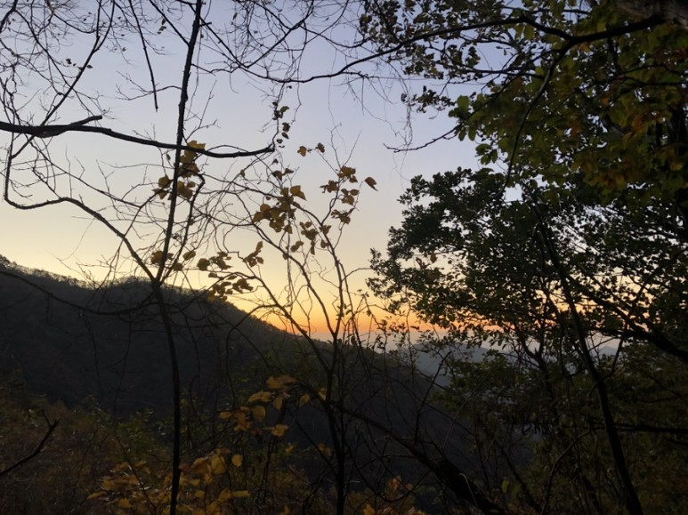
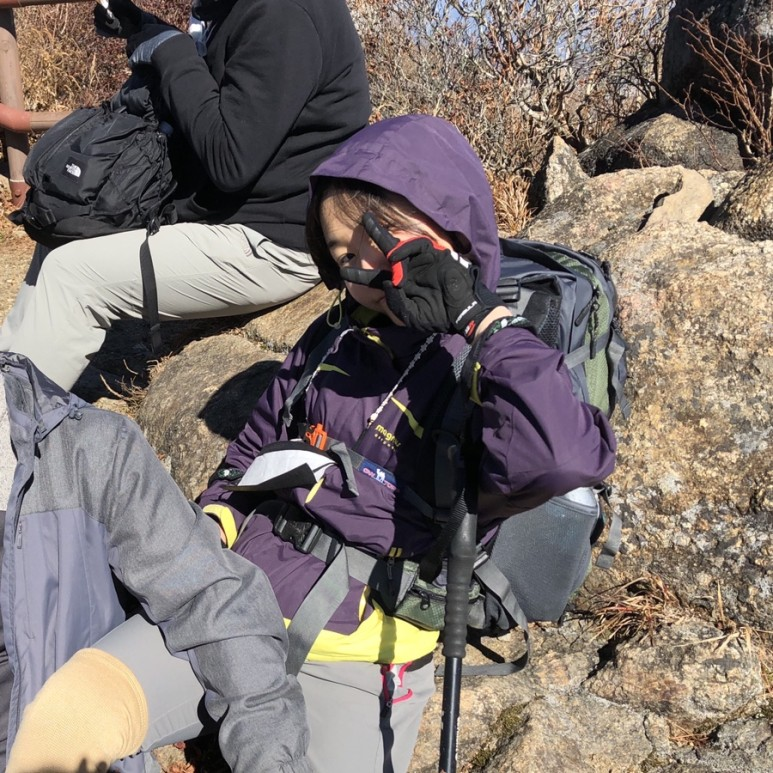
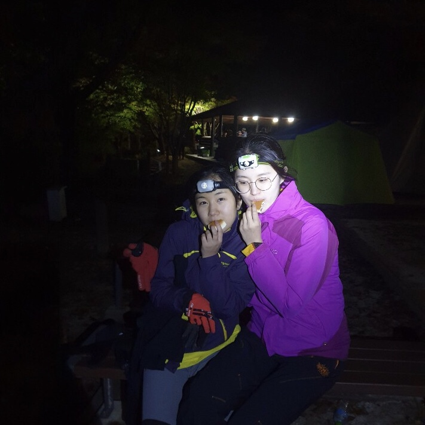
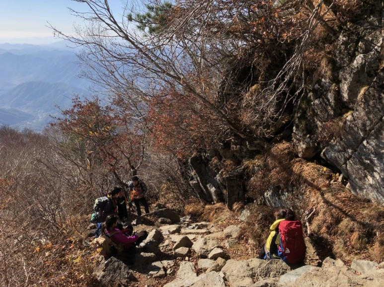

<!doctype html>
<html>
    <head>
        <meta charset="UTF-8">
        <title>HAGUS HARDWARE</title>
        <link rel="stylesheet" type="text/css" href="../../css/pages.css">
    </head>
</html>

<body>
    <header>
        <h3><a href = "../../index.html">HAGUS <br> HARDWARE</a></h3> 
        <ul>
            <li><a href ="../../index.html">ABOUT</a></li>
            <li><a href ="../../TIL.html">TIL</a></li>
            <li><a href ="../../tag.html">LOG</a></li>
        </ul>
    </header>

    <section class="section">
    <div id = "tag_menu">
    </div>

    <script src = "../../tag_menu.js"></script>

    <div id = "tag_list">
        <div class="l_title"><a href = "../../tag.html">History. </a></div><hr>
        <div class = "l_subtitle"><div class = "title"><a href = "../../tag.html"><strong>[Reflection] 생존훈련 </div><div class="date">2020.10.29</div></strong></a></div>
             <!--content-->
        <div class = "content">
        <br>
        생존 훈련은 여러가지를 리플렉션 해볼 수 있었기에 2박3일간 겪었던 일들로 정리해 네번째 리플렉션을 적는다.<br>
        장소 : 지리산<br>
        기간: 2020.10.22 - 24<br>
        <br>
        <br>
        <code>
        <pre>
        <span style="color: gray;"><strong>DAY1.</strong></span><br>
        아침 7시에 공동체에서 나와 버스타고 원지로 향했다. 난생 처음 들어보는 곳이었다. 
        전날부터 준비하고 아침 일찍 일어나서 몸은 벌써 지쳤지만 새로운 일들이 기다리고 있기에 설레고 즐거웠다. 
        처음으로 프리미엄 버스를 탔다. 프리미엄 버스는 너무 편하고 좋았는데 한번 경험해본 것으로 만족한다. 
        짐은 한가득이다. 조금은 두려운 마음들이 들었다. 10명의 팀원들과 무사히 훈련을 마치고 웃으며 돌아올 수 있을까?

        첫날 미션은 집짓기 미션이다. 집합 장소에서 미션 장소 까지 걸어 올라가는데 너무 힘들었다. 얼마나 걸었는지 
        모르겠지만 이것은 지리산 맛보기라고 했다.산타기가 두려워졌다. 미션 장소에 도착하여 바로 집짓기를 시작했다. 
        이 미션을 실패하면 잠도 못자고 밥도 못먹는다. 최대한 빨리 끝내고 싶었다. 강목 몇개만 주어지고 넝쿨로 엮어서 
        주어진 그림대로 집을 완성시켜야 한다. 처음엔 빨리 끝날 수 있을 것 같았다. 시간이 지날 수록 나의 믿음은 
        할 수 없다로 바뀌고 있었다. 집을 짓지 못하면 밥도 못먹고 잠도 못잔다. 거의 반 포기를 하고 계속 보수작업만 
        기계적으로 하고 있었다. 너무 춥고 아무런 생각도 안들었다. 결국 시원간사님께서 집을 완성시킬 수 있도록 방향을 
        계속 알려주시며 빨리 끝낼 수 있도록 도와주셨다. 우리는 처음 시원 간사님의 말씀을 듣지 않았다. 시간은 지나고 
        끝은 보이지 않고 우리의 믿음은 할 수 없다로 바뀌어 가고 있을 때 거의 한두시간 만에 역전되어 2번째로 집짓기 
        미션을 성공했다. 우리는 할 수 없음에 믿음을 들였다. 하지만 주님은 할 수 있다고 말씀하셨다.
        </pre>
        </code>
        <br>
        <code>
        <pre>
        <span style="color: gray;"><strong>DAY2.</strong></span>
      
        생존코스: 중산리야영장 - 로타리 대피소 - 천왕봉 - 중봉 - 치밭못대피소 - 유평삼거리 - 수막골 야영장

        지리산을 탄지 15시간만에 목적지에 도착했다. 너무 힘들었다. 다리가 부서질 것 같았다. 
        힘들었지만 끝나고 돌아보니 배운 점들이 많았다.
        </pre>
        </code>
        <br>
        <br>
<pre>
<span style="color: lightgray; font-size: 40px">1.</span> “나도 개입 안할테니까 너도 개입하지마” 개인주의다. 하지만 내가 힘이 없으면 개인으로 살아갈 수 없다. 
나는 혼자 해결하려는 힘이 강하다는 것을 보게 되었다. 내가 표정이 안좋아진다 싶으면 팀원들이 와서 나의 상태를 계속 봐줬다. 
수림 간사님이 나의 상태를 많이 봐주고 챙겨줬는데 나는 너무 힘들어서 대답하기도 싫고 말도 안걸어줬으면 좋겠다고 생각했다. 
그냥 나를 내버려 뒀으면 좋겠다는 생각이 가득했다. 지금 생각하면 미안하다. 그때까지만 해도 나는 나 혼자 앞으로 갈 수 있었다. 
다른 사람도 보지 않았다. 그런데 갑자기 다리에 쥐가 나고 넘어졌다. 다행히 푹신푹신한 평지에서 넘어졌다. 그때 다른 팀원이 
잠깐 동안 나의 가방을 들고 가주셨다. 미안한 마음이 들었는데 그것이 모두를 위한 길이었다. 우리는 주어진 시간 안에 산을 
내려가야 했다. 짐을 맡기니 그제서야 다른 사람들이 눈에 보였다. 몸이 자유로워졌다. 누군가에게 도움을 요청하는 것이 
민폐라고만 생각했는데 도움을 요청하지 않을 때 다른 사람들에게 더 민폐가 될 수 있다는 것을 배웠다. 

자유한 사람은 다른 사람의 짐을 질 수 있다. 그것이 우리의 삶에도 적용이 된다. 내가 자유하지 못하는 부분에 대해 
직면하고 도움을 요청하는 것, 내가 자유한 영역이 있다면 다른 사람의 짐을 함께 질 수 있는 것. 그것이 그리스도인의 몸이다. 
몸은 따로 움직일 수 없다. 유기적으로 연결되어져 있다. 그렇기에 서로의 아픔을 알고 그 기능을 대신 해줄 수 있는 것들이 
몸 안에 있는 것이다. 그 몸을 뭐라고 비난하는 것은 나를 욕하는 것과 같다. 나도 그 몸의 일부이기 때문이다.
</pre>
<br>
<br>
<pre>
<span style="color: lightgray; font-size: 40px">2.</span> “쉽게 포기하는 것이 습관이 되어버린 세대” 산을 탄지 1시간도 안돼서 절망감에 빠졌다. 
도저히 주어진 13시간을 이 산에서 보낼 용기가 나지 않았다. 포기하고 싶은 마음이 벌써 올라왔다. 
혼자였으면 분명 포기했을 것이다. 팀원들이 함께 가기에 한 발자국씩 나아갈 수 있었다. 
그동안 내가 일을 할 때 적당히 하고자 했던 마음들이 있었다는 것이 드러났다. 피드백 때 들은 말씀이 와닿았다. 

“13시간 안에 들어오는 것이 우리 삶과는 관계가 없지만, 그런 것들 안에서 우리 삶을 대하는 태도가 다 드러난다”
</pre>
<br>
<br>
<pre>
<span style="color: lightgray; font-size: 40px">3.</span> "내가 나를 구원하려 했다. 구원은 하나님께 있다." 
그래서 주님이 나에게 하고 싶으신 말씀은 나와 함께 하신다는 것이다. 내가 그 분과 함께 하기 위해 무엇을 해야하는 것이 아닌 
그분이 나랑 계속 함께 있다는 것을 아는 것이 그분과 함께하는 것이었다. 그동안 “함께”에 대한 궁금증이 풀어졌다. 사람과도 
마찬가지였다. 그 사람을 알아가는 것, 관심을 가지는 것이 나에게 필요한 “함께”였다. 주님은 나의 조건을 보시지 않는다. 
내가 무엇을 해서가 아니라 그분은 무조건적으로 나를 사랑하신다. 이게 말이 되는 것일까? 많이 들어오던 말이 어색하게 느껴지면서 
말도 안된다고 생각했다. 사람으로는 경험할 수 없었기에 그 분의 사랑이 와닿지 않았다. 

맞다. 그분은 원래 말이 안되는 일을 행하시는 분이다. 

말씀이 추상적 개념이 아닌 실재 또는 실제라는 것. 모든 사람들이 알았으면 좋겠다. 나도 포함이다. 알게 될 것들이 많이 남아있다. 
알면 알 수록 놀랍다. 그 분을 더 알고 싶다. 이제 그분과 exciting한 일들을 경험하게 될 것이기에 기대된다. 신난다.
</pre>
<br>
<br>




<br>
<br>
<br>
<br>
    
    </div>

    </div>

</section>

    
</body>


